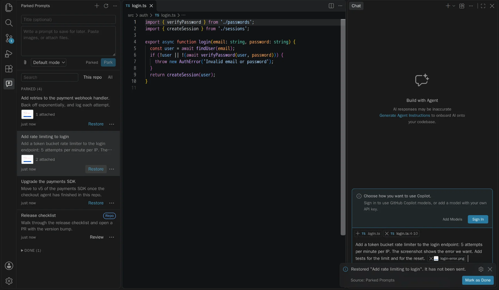
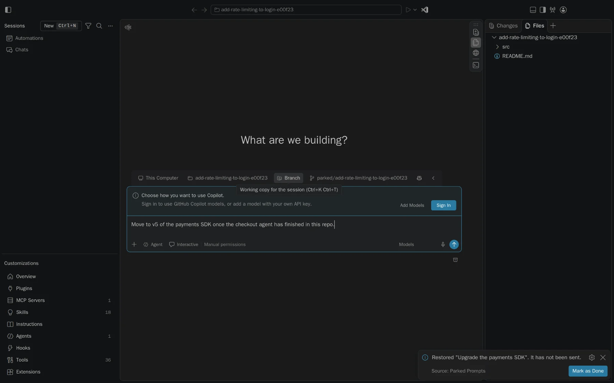
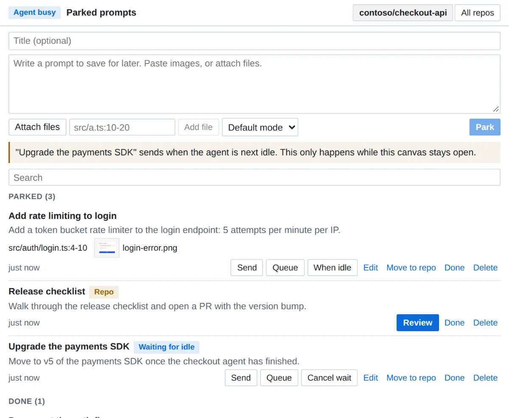
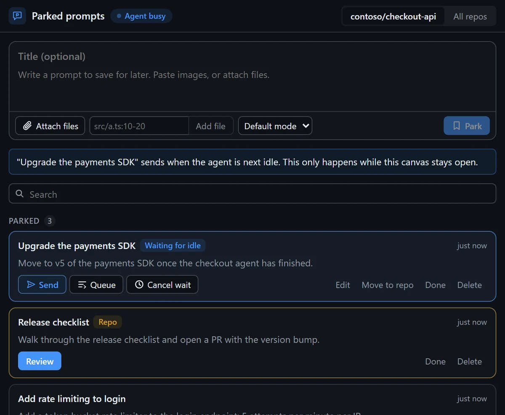
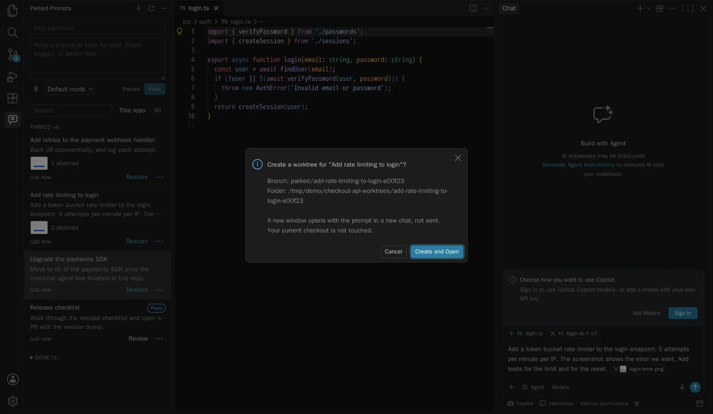
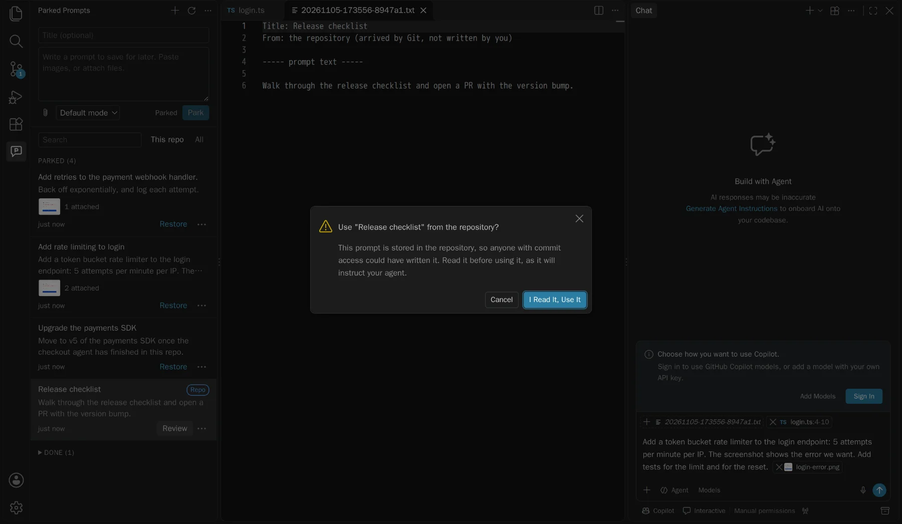

P For VS Code and Copilot Preview
The agent's busy. Park the prompt.
Save a chat prompt with its files and images, without sending it. Bring it back when the codebase is free, or run it in a worktree right now.
Opens in your editor, ready to install. Other ways to install
How it works
Your idea can't wait. Your codebase has to.
When another agent is mid-change, starting a second one causes conflicts, and sitting on the idea means losing it. So keep it somewhere safe, with everything it needs.
Park
Write the prompt in the sidebar, and paste a screenshot or attach files. It saves as you type, and nothing goes to any model.
Wait
It stays on disk, matched to the repository by its Git remote, so it survives re-clones, worktrees, and restarts.
Restore
When the lot clears, it goes back into a new chat with its attachments. You read it and press send yourself.
The integration
It meets you where you already work.
One store, reached from everywhere. A prompt parked in one place shows up in all of them.
Back in chat, attachments and all
Restore fills the chat input in a new chat, so it can't replace something you were typing.
- Images attach as images, and files keep their line ranges
- Workspace files attach their current version, not a stale copy
- Never sent. You stay in control of when it runs

Fills the Agents window composer
The extension also runs in the Agents window, with no setting to change. It uses the command that works there, and the prompt waits in the composer.
- Restores into a new session's composer, unsent
- This window takes text only, so files are listed by path
- For real attachments there, use the canvas

A panel inside your session
A Copilot canvas gives you the same list next to the agent, and can actually deliver a prompt: now, after this turn, or when the agent goes idle.
- Only you can send. The agent can read and save drafts
- Built with canvas-kit, and installs as a Copilot plugin
- Runs on 127.0.0.1 with a per-launch token, because screenshots are private


Or don't wait at all
Run in a worktree starts a prompt now, without touching the busy checkout. Confirm the branch and folder, and a new window opens with the prompt in a new chat.
- Your first checkout stays exactly where it was
- Attachments resolve against the new worktree
- Still unsent, and worktrees are never deleted for you

Share prompts through Git, safely
Move a prompt into .github/parked-prompts/ for your team. A prompt that arrives by pull is treated as what it is: instructions from someone else.
- Moving lists exactly what will be added, and checks for secrets
- Incoming prompts open read-only, with hidden characters shown
- A yes covers that exact content. If it changes, it asks again

Send when idle
Line them up. They go when the agent is free.
Arm a prompt in the canvas and it sends the next time the agent goes idle, one at a time, each waiting for the last to finish. Try it here.
This session
Illustration: nothing here talks to an agent. It only runs while the canvas stays open, so closing it disarms everything.
The rules it doesn't break
Prompts instruct agents, so it's careful with them.
Restoring never sends
It only fills the input. Tests pin down the exact command arguments that keep it that way.
Agents can't send prompts
In the canvas an agent can list, read, and save drafts. Sending and arming are only for you.
Prompts from Git are read first
Anyone with commit access can add one, so each must be reviewed, and each change reviewed again.
Files stay in their folders
Paths with
..and symlinks pointing out are blocked, so a prompt can't reach your other files.
Install
Two pieces. Take either or both.
The extension needs VS Code 1.105 or later. The canvas needs a Copilot session.
VS Code Marketplace
The extension, kept up to date for you. Each button opens it in your editor, ready to install. If nothing happens, get VS Code or Insiders first.
Or search for Parked Prompts, or run:
code --install-extension vs-publisher-473885.parked-promptsVSIX
The same extension as a file, for trying a specific build. Each release attaches one.
Get it from ReleasesCopilot canvas
The panel for send, queue, and send when idle. Then ask your agent to open the parked prompts canvas.
copilot plugin marketplace add jamesmontemagno/parked-prompts
copilot plugin install parked-prompts@parked-promptsGood to know: VS Code doesn't let extensions read what's already attached in the chat input, so "park what I typed" saves the text only. Add attachments in the composer. All the limits